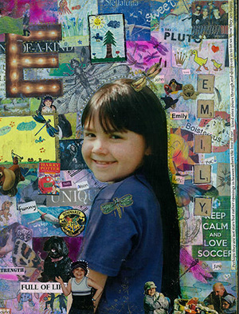

Emily Deanne Inglis
February 19, 1990 ~ June 1, 2002
When Emily was nine, she was diagnosed with neuroblastoma. She battled cancer for three years with humour and tenacity.
“When we found out that her battle with cancer was coming to an end, I struggled with how I would tell her. Our social worker at Children’s offered suggestions on how we might feel comfortable in telling her this tragic news. One thing she came up with was the story of Waterbugs and Dragonflies. On the night I broke the bad news, I told her the story. That was only a couple of weeks before she passed away. On the morning after she died and we had come home from Canuck Place, I went outside to sit on our deck for a few minutes alone. It was then that she sent me my first dragonfly. It swooped all around me for a minute or so and then flew away over our roof. I ran inside to tell John that she was telling us she was OK. That summer of 2002 we had one big dragonfly come into our backyard over and over again to sun itself on some big rocks in our garden. It was very comforting.”
“On my parent’s 60th wedding anniversary, my family was gathered for the party, so my brother hired a photographer. We were in a nice park in Summerland overlooking Okanagan Lake. I was fine with all the group shots, pictures with my parents, etc. but I didn’t want to do the family photo because we hadn’t had one taken since losing Emily more than five years earlier. John said we should do it because this was our family now and what message would we be giving Emily’s sister Alison if all the other families did it and not us. Reluctantly I had to agree.
We waited until the end and when it was finally our turn, just as the photographer was getting us all set up, the dragonfly landed on Alison. She was standing at the time and we took pictures in many poses, moving all around then sitting down and getting back up again, but the dragonfly did not fly away. That dragonfly stayed until every family photo was taken before it flew away. It was Emily’s message that it was OK to take the pictures. Her spirit was there with us. I am not a religious person but I believe that her her spirit is always here with us. As you can imagine, not one day has gone by since we lost her that we do not think of her. She will be with us forever.”
The Inglis Family